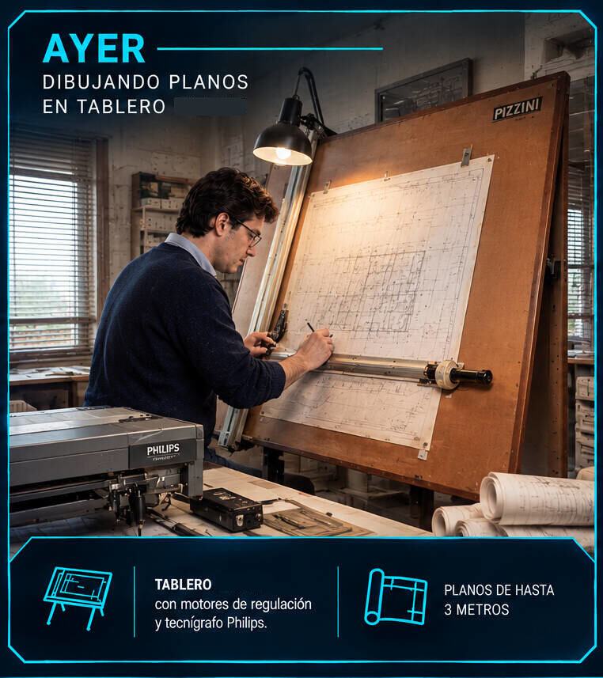
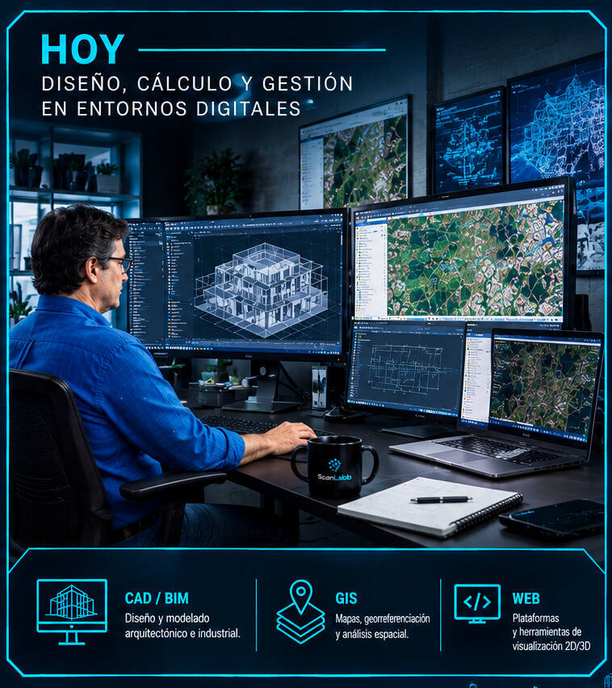
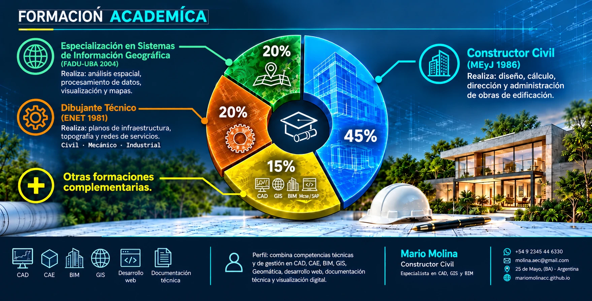
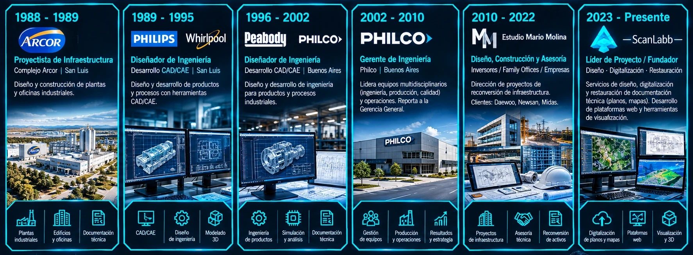

> ACCESS GRANTED
Mario Molina
> Diseño y Dirección
ScanLabb Laboratorio Digital
Resumen perfil profesional
Mario Molina es un Constructor Civil, GeoInformático, Dibujante e Ilustrador arquitectónico argentino, con más de tres décadas de experiencia en proyectos de ingeniería, construcción e industria para empresas multinacionales.
Ha diseñado y desarrollado proyectos para empresas internacionales líderes como — Arcor, Philips, Whirlpool, Peabody y Philco — y ha liderado proyectos de reconversión de activos industriales para marcas como Daewoo, NewSan y Midas.
🔄 Evolución de la documentacion técnica: Transición antes y después de 1992
Su trayectoria representa la evolución desde el trabajo tradicional en tableros de dibujo y tecnígrafos, hasta la gestión digital avanzada. Este cambio dio paso a su especialización en sistemas CAD y CAE (1992), sumando años despues GIS (2004) y, en los ultimos años la integración de BIM, respaldada por una formación académica continua.
En sus inicios como dibujante, ilustrador y proyectista, desarrollaba sus funciones utilizando tableros, tecnigrafos, copiadoras heliograficas y planos de gran formato. Estos documentos se organizaban en archivos fisicos _ planeras _ bajo rigurosos estándares analogicos de rigor militar (en multinacionales), propios del siglo XX.
Actualmente, su perfil se define como diseñador tecnológico. Su trabajo consiste en integrar diversas tecnologías _ CAD, CAE, BIM, GIS, GeoInformática y Desarrollo Web _, para formar el nucleo del sistemas de informacion digital de las organizaciones del siglo XXI.


💼 Trayectoria y Roles Clave
Inició su carrera como dibujante en la provincia de Buenos Aires (Estudio Arq. Jorge Luis Vázquez, 1980-1982) y como dibujante e ilustrador arquitectónico en CABA (Estudio Iribarne y Asociados, 1982-1986). Esta etapa le permitió incorporarse al ámbito de la arquitectura, la ingeniería y la documentación técnica, antes de completar sus estudios en diseño y construcción.
A lo largo de su carrera se ha desempeñado como:
Diseñador y Proyectista: Desarrollo arquitectónico, mecánico y tecnológico de componentes,
productos y plantas industriales.
Líder de Ingeniería y Proyectos: Gerencia de Ingenieria (industrial / civil) y dirección de obras (viviendas,
naves industriales y centros logísticos).
Consultor Estratégico: Asesor técnico en la reconversión y optimización de activos industriales.
🚀 Presente: ScanLabb
Actualmente dirige ScanLabb, un estudio especializado en el diseño, digitalización, restauración y gestión inteligente de documentación técnica (planos, mapas y archivos históricos). Transformamos el archivo físico en activos digitales mediante el desarrollo de plataformas web para la consulta y visualización de datos técnicos en 2D y 3D.
Educación

❄️ Formación en Tecnologías de Enfriamiento y Termofísica
Centro de Investigación POLO-UFSC, Universidad Federal de Santa Catarina, SC, Brasil | 2007
Director de POLO-UFSC: Prof. Dr. Ing. Claudio Melo
Área de especialización:
Programa de Especialización en Tecnologías de Enfriamiento y Termofísica. Bajo la dirección del
Prof. Dr. Ing. Claudio Melo, este programa está diseñado para profesionales de ingeniería de empresas
que desarrollan y fabrican electrodomésticos en america latina.
🌐 Especialización en Sistemas de Información Geográfica
Escuela de Posgrado, FADU-UBA | 2004
Área de especialización:
Adquisición y procesamiento de datos geoespaciales, imágenes satelitales y
aéreas, —GNSS— y análisis espacial aplicado a la gestión del territorio.
🏛️ Constructor Civil
Instituto Superior de Educación Tecnológica - CABA |Título nacional MEyJ - 1986.
Campo de acción:
El titulo lo habilita para: Diseñar, calcular, dirigir y administrar obras edilicias y sus
instalaciones. Realiza peritajes, tasaciones y brinda asesoramiento, según normativa vigente.
📐 Dibujante Técnico
Escuela Técnica Nacional, ENET | 25 de Mayo, BA. | 1981.
Áreas de competencia: es el nexo entre la ingeniería y la fabricación, trabajando en tres áreas
principales:
Civil - crea planos de infraestructura, topografía y redes de servicios.
Mecánico - diseño de partes para automotriz, naval y metalmecánica.
Industrial - diseño de layouts de plantas, automatización eléctrica y sistemas de tuberías.
Gestión documental: Administra el sistema de información de la oficina, planta o empresa.
..
Experiencia

Su trayectoria abarca:
- 1988 - 1989: Proyectista de infraestructura, complejo Arcor San Luis (diseño y construcción de plantas y oficinas industriales).
- 1989 - 1995: Diseñador de Ingeniería de desarrollo CAD/CAE | Philips y Whirlpool | San Luis.
- 1996 - 2002: Diseñador de Ingeniería de desarrollo CAD/CAE | Peabody y Philco | Buenos Aires.
- 2002 - 2010: Asume el rol de Gerente de Ingeniería en Philco, con responsabilidad directa sobre equipos multidisciplinarios (ingeniería, producción, calidad) y operaciones, reportando a la Gerencia General.
- 2010 - 2022: Estudio Mario Molina se especializa en el diseño, construcción y asesoría independiente para inversores, family offices y empresa como Daewoo, Newsan y Midas, en la dirección de proyectos de reconversión de infraestructura.
- 2023 - Presente: Lidera ScanLabb, estudio especializado en servicios de diseño, digitalización y restauración de documentación técnica (planos, mapas), incluyendo desarrollo de plataformas web y herramientas de visualización.
..